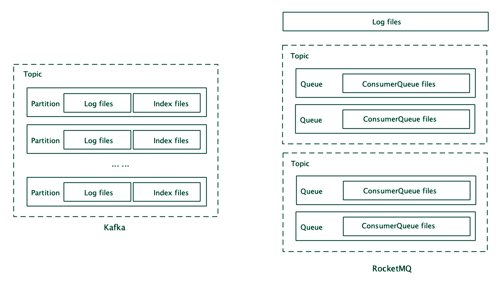
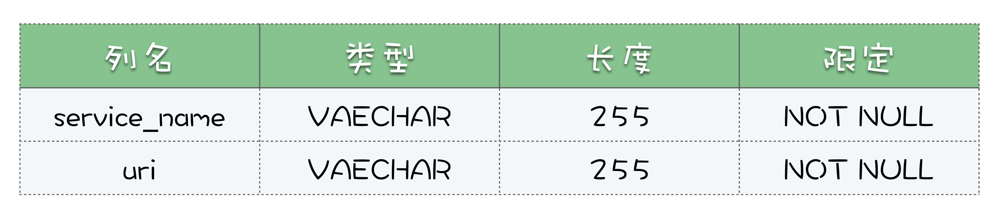

- 00 开篇词 优秀的程序员，你的技术栈中不能只有“增删改查”.md
- 00 预习 怎样更好地学习这门课？.md
- 01 为什么需要消息队列？.md
- 02 该如何选择消息队列？.md
- 03 消息模型：主题和队列有什么区别？.md
- 04 如何利用事务消息实现分布式事务？.md
- 05 如何确保消息不会丢失.md
- 06 如何处理消费过程中的重复消息？.md
- 07 消息积压了该如何处理？.md
- 08 答疑解惑（一） 网关如何接收服务端的秒杀结果？.md
- 09 学习开源代码该如何入手？.md
- 10 如何使用异步设计提升系统性能？.md
- 11 如何实现高性能的异步网络传输？.md
- 12 序列化与反序列化：如何通过网络传输结构化的数据？.md
- 13 传输协议：应用程序之间对话的语言.md
- 14 内存管理：如何避免内存溢出和频繁的垃圾回收？.md
- 15 Kafka如何实现高性能IO？.md
- 16 缓存策略：如何使用缓存来减少磁盘IO？.md
- 17 如何正确使用锁保护共享数据，协调异步线程？.md
- 18 如何用硬件同步原语（CAS）替代锁？.md
- 19 数据压缩：时间换空间的游戏.md
- 20 RocketMQ Producer源码分析：消息生产的实现过程.md
- 21 Kafka Consumer源码分析：消息消费的实现过程.md
- 22 Kafka和RocketMQ的消息复制实现的差异点在哪？.md
- 23 RocketMQ客户端如何在集群中找到正确的节点？.md
- 24 Kafka的协调服务ZooKeeper：实现分布式系统的“瑞士军刀”.md
- 25 RocketMQ与Kafka中如何实现事务？.md
- 26 MQTT协议：如何支持海量的在线IoT设备.md
- 27 Pulsar的存储计算分离设计：全新的消息队列设计思路.md
- 28 答疑解惑（二）：我的100元哪儿去了？.md
- 29 流计算与消息（一）：通过Flink理解流计算的原理.md
- 30 流计算与消息（二）：在流计算中使用Kafka链接计算任务.md
- 31 动手实现一个简单的RPC框架（一）：原理和程序的结构.md
- 32 动手实现一个简单的RPC框架（二）：通信与序列化.md
- 33 动手实现一个简单的RPC框架（三）：客户端.md
- 34 动手实现一个简单的RPC框架（四）：服务端.md
- 35 答疑解惑（三）：主流消息队列都是如何存储消息的？.md
- 加餐 JMQ的Broker是如何异步处理消息的？.md
- 结束语 程序员如何构建知识体系？.md
35 答疑解惑（三）：主流消息队列都是如何存储消息的？
你好，我是李玥。
在我们一起做了两个实践案例以后，相信你或多或少都会有一些收获。在学习和练习这两个实践案例中，我希望你收获的不仅仅是流计算和 RPC 框架的设计实现原理，还能学会并掌握在实现这些代码过程中，我们用到的很多设计模式和编码技巧，以及代码背后无处不在的“松耦合”、“拥抱变化”这些设计思想。最重要的是，把这些学到的东西能最终用在你编写的代码中，才是真正的收获。
照例，在每一模块的最后一节课，我们安排热点问题答疑，解答同学们关注比较多的一些问题。
1. 主流消息队列都是如何存储消息的？
我在之前的课程中提到过，现代的消息队列它本质上是一个分布式的存储系统。那决定一个存储系统的性能好坏，最主要的因素是什么？就是它的存储结构。
很多大厂在面试的时候，特别喜欢问各种二叉树、红黑树和哈希表这些你感觉平时都用不到的知识，原因是什么？其实，无论是我们开发的应用程序，还是一些开源的数据库系统，在数据量达到一个量级之上的时候，决定你系统整体性能的往往就是，你用什么样的数据结构来存储这些数据。而大部分数据库，它最基础的存储结构不是树就是哈希表。
即使你不去开发一个数据库，在设计一个超大规模的数据存储的时候，你也需要掌握各种数据库的存储结构，才能选择一个适合你的业务数据的数据库产品。所以，掌握这些最基础的数据结构相关的知识，是很有必要的，不仅仅是为了应付面试。
在所有的存储系统中，消息队列的存储可能是最简单的。每个主题包含若干个分区，每个分区其实就是一个 WAL（Write Ahead Log），写入的时候只能尾部追加，不允许修改。读取的时候，根据一个索引序号进行查询，然后连续顺序往下读。
接下来我们看看，几种主流的消息队列都是如何设计它们的存储结构的。
先来看 Kafka，Kafka 的存储以 Partition 为单位，每个 Partition 包含一组消息文件（Segment file）和一组索引文件（Index），并且消息文件和索引文件一一对应，具有相同的文件名（但文件扩展名不一样），文件名就是这个文件中第一条消息的索引序号。
每个索引中保存索引序号（也就是这条消息是这个分区中的第几条消息）和对应的消息在消息文件中的绝对位置。在索引的设计上，Kafka 采用的是稀疏索引，为了节省存储空间，它不会为每一条消息都创建索引，而是每隔几条消息创建一条索引。
写入消息的时候非常简单，就是在消息文件尾部连续追加写入，一个文件写满了再写下一个文件。查找消息时，首先根据文件名找到所在的索引文件，然后用二分法遍历索引文件内的索引，在里面找到离目标消息最近的索引，再去消息文件中，找到这条最近的索引指向的消息位置，从这个位置开始顺序遍历消息文件，找到目标消息。
可以看到，寻址过程还是需要一定时间的。一旦找到消息位置后，就可以批量顺序读取，不必每条消息都要进行一次寻址。
然后我们再来看一下 RocketMQ，RocketMQ 的存储以 Broker 为单位。它的存储也是分为消息文件和索引文件，但是在 RocketMQ 中，每个 Broker 只有一组消息文件，它把在这个 Broker 上的所有主题的消息都存在这一组消息文件中。索引文件和 Kafka 一样，是按照主题和队列分别建立的，每个队列对应一组索引文件，这组索引文件在 RocketMQ 中称为 ConsumerQueue。RocketMQ 中的索引是定长稠密索引，它为每一条消息都建立索引，每个索引的长度（注意不是消息长度）是固定的 20 个字节。
写入消息的时候，Broker 上所有主题、所有队列的消息按照自然顺序追加写入到同一个消息文件中，一个文件写满了再写下一个文件。查找消息的时候，可以直接根据队列的消息序号，计算出索引的全局位置（索引序号 x 索引固定长度 20），然后直接读取这条索引，再根据索引中记录的消息的全局位置，找到消息。可以看到，这里两次寻址都是绝对位置寻址，比 Kafka 的查找是要快的。

对比这两种存储结构，你可以看到它们有很多共通的地方，都是采用消息文件 + 索引文件的存储方式，索引文件的名字都是第一条消息的索引序号，索引中记录了消息的位置等等。
在消息文件的存储粒度上，Kafka 以分区为单位，粒度更细，优点是更加灵活，很容易进行数据迁移和扩容。RocketMQ 以 Broker 为单位，较粗的粒度牺牲了灵活性，带来的好处是，在写入的时候，同时写入的文件更少，有更好的批量（不同主题和分区的数据可以组成一批一起写入），更多的顺序写入，尤其是在 Broker 上有很多主题和分区的情况下，有更好的写入性能。
索引设计上，RocketMQ 和 Kafka 分别采用了稠密和稀疏索引，稠密索引需要更多的存储空间，但查找性能更好，稀疏索引能节省一些存储空间，代价是牺牲了查找性能。
可以看到，两种消息队列在存储设计上，有不同的选择。大多数场景下，这两种存储设计的差异其实并不明显，都可以满足需求。但是在某些极限场景下，依然会体现出它们设计的差异。比如，在一个 Broker 上有上千个活动主题的情况下，RocketMQ 的写入性能就会体现出优势。再比如，如果我们的消息都是几个、十几个字节的小消息，但是消息的数量很多，这时候 Kafka 的稀疏索引设计就能节省非常多的存储空间。
2. 流计算与批计算的区别是什么？
有些同学在《[29 | 流计算与消息（一）：通过 Flink 理解流计算的原理]》的课后留言提问，对于“按照固定的时间窗口定时汇总”的场景，流计算和批计算是不是就是一样的呢？对于这个问题，我们通过一个例子来分析一下就明白了。
比如，你要在一个学校门口开个网吧，到底能不能赚钱需要事先进行调研，看看学生的流量够不够撑起你这个网吧。然后，你就蹲在学校门口数人头，每过来一个学生你就数一下，数一下一天中每个小时会有多少个学生经过，这是流计算。你还可以放个摄像头，让它自动把路过的每个人都拍下来，然后晚上回家再慢慢数这些照片，这就是批计算。简单地说，流计算就是实时统计计算，批计算则是事后统计计算，这两种方式都可以统计出每小时的人流量。
那这两种方式哪种更好呢？还是那句话，看具体的使用场景和需求。流计算的优势就是实时统计，每到整点的时候，上一个小时的人流量就已经数出来了。在 T+0 的时刻就能第一时间得到统计结果，批计算相对就要慢一些，它最早在 T+0 时刻才开始进行统计，什么时候出结果取决于统计的耗时。
但是，流计算也有它的一些不足，比如说，你在数人头的时候突然来了个美女，你多看了几眼，漏数了一些人怎么办？没办法，明天再来重新数吧。也就是说，对于流计算的故障恢复还是一个比较难解决的问题。
另外，你数了一整天人头，回去做分析的时候才发现，去网吧的大多数都是男生，所以你需要统计的是在校男生，而不是所有人的数量。这时候，如果你保存了这一天所有人的照片，那你重新数一遍照片就可以了，否则，你只能明天上街再数一次人头。这个时候批计算的优势就体现出来了，因为你有原始数据，当需求发生变化的时候，你可以随时改变算法重新计算。
总结下来，大部分的统计分析类任务，使用流计算和批计算都可以实现。流计算具有更好的实时性，而批计算可靠性更好，并且更容易应对需求变化。所以，大部分针对海量数据的统计分析，只要是对实时性要求没有那么高的场景，大多采用的还是批计算的方式。
3. RPC 框架的 JDBC 注册中心
上节课《[34 | 动手实现一个简单的 RPC 框架（四）：服务端]》的课后思考题，要求你基于 JDBC 协议实现一个注册中心，这样就可以支持跨服务器来访问注册中心。这个作业应该是我们这个系列课程中比较难的一个作业了，我在这里也给出一个实现供你参考。
这个参考实现的代码同样在放在 GitHub 上，你可以在这里查看或者下载，它和之前的 RPC 框架是同一个项目的不同分支，分支名称是 jdbc-nameservice。同样，我把如何设置环境，编译代码，启动数据库，运行这个 RPC 框架示例的方法都写在了 README 中，你可以参照运行。
相比于原版的 RPC 框架，我们增加了一个单独的 Module：jdbc-nameservice，也就是 JDBC 版的注册中心的实现。这个实现中，只有一个类 JdbcNameService，和 LocalFileNameService 一样，他们都实现了 NameService 接口。在 JdbcNameService 这个注册中心实现中，它提供 JDBC 协议的支持，注册中心的元数据都存放在数据库中。
我们这个思考题，其中的一个要求就是，能兼容所有支持 JDBC 协议的数据库。虽然 JDBC 的协议是通用的，但是每种数据库支持 SQL 的语法都不一样，所以，我们这里把 SQL 语句作为一种资源文件从源代码中独立出来，这样确保源代码能兼容所有的 JDBC 数据库。不同类型的数据的 SQL 语句，可以和数据库的 JDBC 驱动一样，在运行时来提供就可以了。
这个数据库中，我们只需要一张表就够了，这里面我们的表名是 rpc_name_service，表结构如下:

为了能自动根据数据库类型去加载对应的 sql，我们规定 sql 文件的名称为：[SQL 名] [数据库类型].sql。比如我们使用的 HSQLDB 自动建表的 SQL 文件，它的文件名就是：ddl.hsqldb.sql。 JdbcNameService 这个类的实现就比较简单了，在 connect 方法中去连接数据库，如果 rpc_name_service 不存在，就创建这个表。在 registerService 中往数据库中插入或者更新一条数据，在 lookupService 中去数据库查询对应服务名的 URI。
在使用的时候，还需要在 CLASSPATH 中包含下面几个文件：
- add-service.[数据库类型].sql
- lookup-service.[数据库类型].sql
- ddl.[数据库类型].sql
- 数据库的 JDBC 驱动 JAR 文件。
在我们这个实现中，已经包含了 HSQLDB 这种数据库的 SQL 文件和驱动，你也可以尝试提供 MySQL 的 SQL 文件和驱动，就可以使用 MySQL 作为注册中心的数据库了。
4. 完成作业的最佳姿势
我们案例篇的几个编码的作业，都是基于课程中讲解的代码进行一些修改和扩展，很多同学在留言区分享了代码。为了便于你修改和分享代码，建议你使用 GitHub 的 Fork 功能，用法也很简单，在示例项目的 GitHub 页面的右上角，有一个 Frok 按钮，点击之后，会在你自己的 GitHub 账号下面创建一份这个项目的副本，你可以在这个副本上进行修改和扩展来完成你的作业，最后直接分享这个副本的项目就可以了。
总结
以上就是我们这次热点问题答疑的全部内容了，同时我们这个系列课程的最后一篇：案例篇到这里也就结束了。
这个案例篇模块不同于前两个模块，之前主要是讲解一些消息队列相关的实现原理、知识和方法技巧等等，案例篇的重点还是来通过实际的案例，来复习和练习前两篇中涉及到的一些知识。我们案例篇中每节课的作业，大多也都是需要你来写一些代码。
希望你在学习案例篇的时候，不要只是听和看，更重要的就是动手来写代码，通过练习把学到的东西真正的消化掉。也欢迎你在评论区留言，分享你的代码。